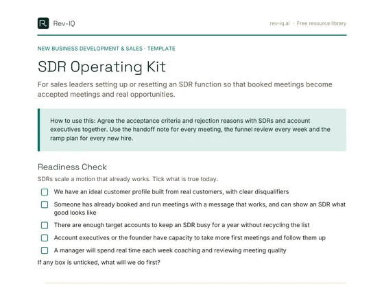

The Meeting Nobody Wanted
Most struggling SDR teams have the same weekly argument. The SDRs point to the meetings they booked. The account executives point to the meetings that were a waste of time: the wrong person, no real problem, a prospect who thought they were getting a free consultation, or a calendar invite nobody turned up to. Leadership looks at a healthy meetings number and a flat pipeline and can't work out which side is right.
Usually both are. The SDRs did what they were measured on. The account executives are right that it didn't produce pipeline. The failure sits in between: nobody defined what a good meeting is, how it gets handed over, or which numbers prove the function is working. An SDR team without those definitions will optimise for activity, because activity is the only thing anyone can see.
The fix is not a better script or a new sequencing tool. It is a small set of operating decisions, made once and enforced every week, that connect what an SDR does on Monday to qualified pipeline at the end of the month.
Before You Hire One: Do You Have Something to Scale?
SDRs scale a motion that already works. They are not good at discovering one. If the founder or the first account executives haven't yet proven which accounts buy, why they buy and what message gets a reply, an SDR will spend months testing hypotheses with the least experience and context in the business. That is expensive for you and demoralising for them.
A reasonable test of readiness is whether you can answer yes to most of these:
- You have an ideal customer profile built from real customers, with clear disqualifiers.
- Someone has already booked and run meetings from outbound or inbound using a message that works, and can show an SDR what good looks like.
- There are enough accounts in the market to keep an SDR busy for a year without recycling the same list.
- Account executives, or the founder, have capacity to take more first meetings and follow them up properly.
- A manager will spend real time each week coaching, reviewing calls and inspecting meeting quality.
If several of those are missing, the better first step is usually to strengthen founder-led or account executive-led prospecting until the pattern is clear. Then hire the SDR to run it at greater volume.
It is also worth deciding which kind of SDR role you are hiring for. An inbound role qualifies and books leads who have raised their hand, and success depends on speed and judgement. An outbound role creates conversations with people who haven't, and success depends on research, persistence and messaging. The skills overlap but the daily work, targets and coaching are different. Blending the two in one junior role often means inbound leads get answered late while outbound gets done in whatever time is left.
Define What a Good Meeting Is
The single most useful document an SDR function can have is a short list of meeting acceptance criteria, agreed by the SDRs, the account executives and their manager. It answers one question: what has to be true for a meeting to count?
| Criterion | What it means in practice |
|---|---|
| Right account | The account matches the ideal customer profile and sits in tier A or B |
| Right person | The contact feels the problem or influences the decision, or has agreed to bring someone who does |
| A real reason to meet | The prospect has confirmed a problem, a trigger or an active initiative in their own words |
| Agreed agenda | The prospect knows what the meeting is for and what they'll get from it |
| Calendar accepted | The invite is accepted, not just sent, with the right attendees on it |
Then separate the stages that most teams blur together. A meeting booked is on the calendar. A meeting held actually happened. A meeting accepted is one the account executive agrees met the criteria. An opportunity created is one where there is a genuine reason to keep working the deal. Each step is a different measure of quality, and each one belongs in the weekly numbers.
Give account executives a simple rule: accept or reject every held meeting within one working day, and if you reject it, choose a reason from a short fixed list such as wrong account, wrong person, no confirmed problem, or no-show. Free-text reasons are impossible to analyse. A fixed list turns arguments about meeting quality into a pattern you can coach.
The Handoff Note
A lot of good SDR work is lost in the handoff. The SDR learned why the prospect agreed to meet, what they said about the problem and who else is involved, then the account executive walks into the meeting with nothing but a name and a job title, and asks the prospect to repeat it all. Prospects notice, and it makes the second conversation feel like the first.
A handoff note fixes this in five minutes. It should cover:
- Why this account. The profile fit and tier.
- Why now. The signal or trigger that prompted outreach.
- What they said. The problem in the prospect's own words, quoted where possible.
- Who else. Other people mentioned, and whether they'll attend.
- What was promised. Anything the SDR told them the meeting would cover.
- Open questions. What the SDR didn't find out and the account executive should ask.
For tier A accounts, consider a warm handoff: the SDR joins the first few minutes of the meeting, introduces the account executive and recaps what they heard. It shows the prospect that the business listened, and it gives the SDR a direct view of what happens next, which is the fastest way they learn what a good meeting looks like.
No-Shows Are a Signal, Not Bad Luck
Every team gets no-shows, but a high or rising no-show rate is almost always a sign that the prospect's agreement to meet was weak. They said yes to get off the phone, they weren't clear what the meeting was for, or the meeting was booked so far out that the reason went stale.
A few habits reduce no-shows without being pushy. Book the meeting as soon as possible after the conversation rather than weeks away. Send a short confirmation the day before that restates the agenda and what the prospect will get from the meeting, rather than a generic reminder. Make it easy to reschedule. If someone doesn't show, follow up the same day with a simple, friendly offer of two alternative times, and treat a second no-show as a clear answer.
Then look at the pattern. Track no-shows by source, message, SDR and how far ahead the meeting was booked. If one segment or one opening line produces most of them, the problem is upstream, in targeting or messaging, not in the reminder process.
The Funnel That Tells You Where It Leaks
An SDR funnel has more steps than most dashboards show. Tracking each conversion step, rather than just activity and meetings, tells you exactly where to look when results fall short.
| Step | If this conversion is low | Where to look |
|---|---|---|
| Activity to conversation | People aren't replying or picking up | List quality, contact data, timing, channel mix |
| Conversation to meeting booked | People talk but don't see a reason to meet | Message relevance, the ask, objection handling |
| Booked to held | Agreement to meet was weak | Agenda clarity, booking lead time, confirmations |
| Held to accepted | Meetings don't meet the criteria | Targeting, qualification during booking, criteria understanding |
| Accepted to opportunity | Good meetings aren't progressing | Account executive follow-up and discovery, not just the SDR |
That last row matters. An SDR function can only be judged fairly if the account executive side of the handoff is inspected too. If accepted meetings regularly stall before becoming opportunities, the problem may be in discovery, follow-up or capacity, and pushing the SDRs harder won't fix it.
Resist the urge to import benchmark conversion rates from vendor reports. They vary enormously with market, price point, deal size and list quality. Run the funnel for six to eight weeks, establish your own baseline, then set improvement targets against it.
Targets and Pay That Reward the Right Thing
What you pay SDRs on is what you'll get. Paying on meetings booked produces meetings booked, including ones that should never have been booked. Paying only on closed revenue puts most of the outcome outside the SDR's control and makes the variable pay feel like a lottery.
A sound middle ground is to pay mainly on meetings that are held and accepted against the agreed criteria, with a smaller component tied to opportunities created or pipeline value from those meetings. That keeps the SDR focused on quality while staying close enough to their own work that they can influence it. Keep the plan simple enough to calculate on a napkin. If an SDR can't tell you what they'll earn from this week's work, the plan isn't motivating them.
Activity targets still have a place, especially in the first months, but treat them as leading indicators for coaching rather than the thing you reward. An SDR hitting activity targets with no meetings needs help with targeting or messaging. An SDR producing accepted meetings with lower activity is doing something worth copying.
A Weekly Rhythm That Builds Skill
SDR performance improves through repetition and specific feedback, which means the management rhythm matters more than the tooling. A simple cadence covers most of it:
- A weekly one-to-one of around thirty minutes. Review the funnel numbers for the week, listen to two call recordings or read two email threads together, and agree one specific skill to work on before next week.
- A short weekly team review. Look at accepted and rejected meetings, share messages and openers that worked, and flag signals worth chasing.
- A monthly calibration with the account executives. Go through a sample of rejected meetings together, agree whether the criteria were applied fairly, and update the criteria if the market has taught you something.
The coaching focus should change as the SDR develops: research and targeting early, then message and opener, then objection handling and booking discipline. Keep a simple coaching log so both the SDR and the manager can see progress over time, rather than repeating the same feedback every week.
Ramp: The First Ninety Days
A new SDR needs a structured ramp with clear expectations at each stage. A practical shape for the first ninety days looks like this:
- Days 1 to 30: learn. The ideal customer profile and its disqualifiers, the problem you solve in the buyer's words, the main competitors and alternatives. Listen to recorded calls, shadow account executive meetings, and write first sequences that the manager reviews before they go out. Goals here are about knowledge and quality, not volume.
- Days 31 to 60: run. Own a defined set of tiered accounts. Hit agreed activity and conversation levels, and book first meetings against the acceptance criteria. Weekly reviews focus on what is and isn't converting.
- Days 61 to 90: produce. Work toward the full target for held and accepted meetings, with a ramped quota that steps up rather than jumping to the full number on day one.
Write the ramp plan down before the person starts, and review it with them at day 30 and day 60. The 30-60-90 day plan framework in the Resource Library covers the general approach in more detail.
Where SDRs Sit and Where They Go Next
SDRs can report into sales or marketing, and either can work. What matters is that the person they report to owns the result they're measured on. If SDRs are measured on accepted meetings and opportunities, reporting into the sales leader usually keeps the feedback loop with account executives tight. If they mainly qualify inbound demand, marketing can be a natural home. Avoid dual reporting, where two leaders each assume the other is coaching.
Most people take an SDR role as a step toward something else, usually an account executive role. Make that path explicit: the skills and results that make someone ready, and roughly how long it typically takes in your business. A clear path is one of the strongest retention tools you have, and promoting a proven SDR into an account executive role is often lower risk than hiring one externally, because they already know your market and your buyers.
Putting It Into Practice
Use the SDR Operating Kit to set up the foundations: the meeting acceptance criteria, the rejection reasons, the handoff note, the weekly funnel review and a ninety-day ramp plan. If you already have an SDR team, start with the acceptance criteria and the handoff note. Those two documents resolve most of the friction between SDRs and account executives within a few weeks, and they make every other number in the funnel more meaningful.
- SDRs scale a motion that already works. Prove the profile and the message before hiring someone to run it at volume.
- Agree written meeting acceptance criteria, and have account executives accept or reject every held meeting within a day using a fixed list of reasons.
- Track booked, held, accepted and opportunity created as separate steps, because each one diagnoses a different problem.
- A five-minute handoff note, covering why this account, why now and what the prospect said, stops buyers repeating themselves.
- Pay mainly on held and accepted meetings, not meetings booked, and treat activity numbers as coaching signals.
- A weekly one-to-one with real call and email review, plus a written 90-day ramp, does more for performance than any tool.
Frequently asked questions
When should a technology business hire its first SDR?
When the profile and the outbound message have already been proven by a founder or account executive, there are enough accounts to work for a year, someone has capacity to take the meetings, and a manager will coach weekly. SDRs scale a working motion; they rarely discover one.
What should SDRs be paid on?
Mainly on meetings that are held and accepted against agreed criteria, with a smaller component tied to opportunities or pipeline created. Paying on meetings booked rewards volume over quality.
What is a meeting acceptance criteria list?
A short, agreed definition of what makes a meeting count: the right account, the right person, a confirmed reason to meet, an agreed agenda and an accepted calendar invite. It turns arguments about meeting quality into something you can measure and coach.
Should SDRs report to sales or marketing?
Either can work. What matters is that the leader they report to owns the result they're measured on, and that there's one clear manager responsible for coaching them.
SDR Operating Kit
For sales leaders setting up or resetting an SDR function so that booked meetings become accepted meetings and real opportunities.

- Readiness Check
- Meeting Acceptance Criteria
- Rejection Reasons
- SDR to AE Handoff Note
- Weekly Funnel Review
- Weekly One-to-One Agenda
- Coaching Log
- 90-Day Ramp Plan
- Format
- PDF, 5 pages, designed to print and fill in
- Best for
- Sales leaders hiring their first SDRs or fixing friction between SDRs and account executives
- What to bring
- Your ideal customer profile, last month's meeting and opportunity numbers, and examples of good and poor meetings
- After you submit
- Your download starts straight away. Nothing is emailed to you, and you won't be added to a mailing list unless you tick the opt-in.
Rev-IQ SDR Kit
Six AI skills for Claude, ChatGPT and Perplexity that apply this framework: practise calls against a scoring rubric, hand over meetings against clear acceptance criteria, and review each rep's funnel every week against their own baseline. They run in your own AI account.
See the SDR Kit →Templates get you moving fast. If you want a structured read on where this is actually breaking down in your business, that's a short diagnostic conversation, not another download.
Discuss advisory support →